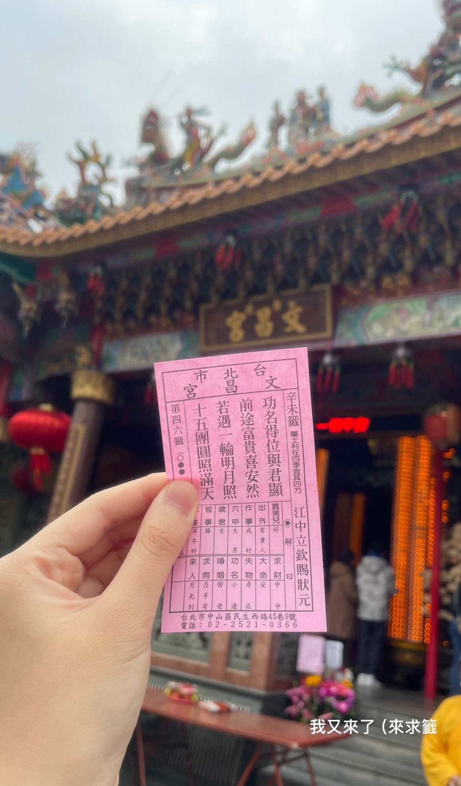
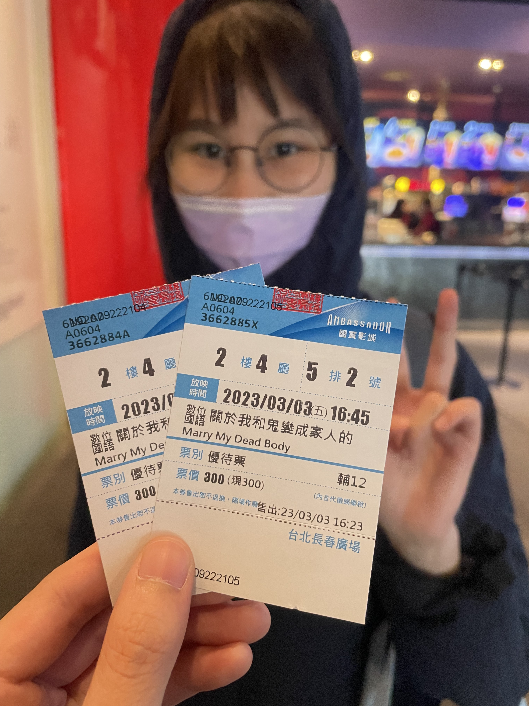
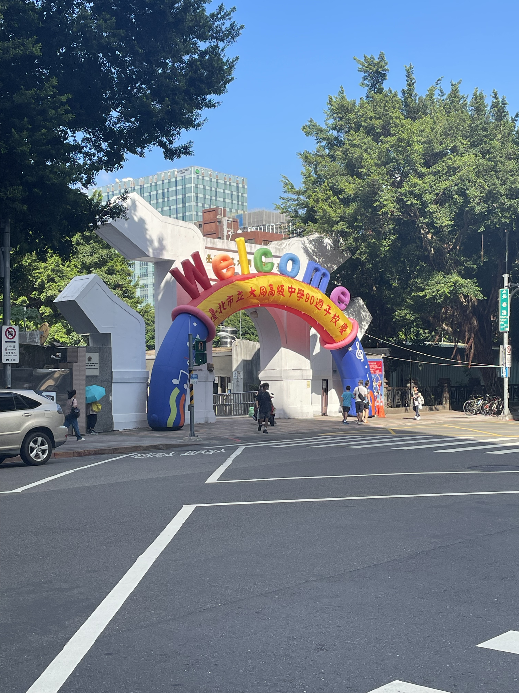
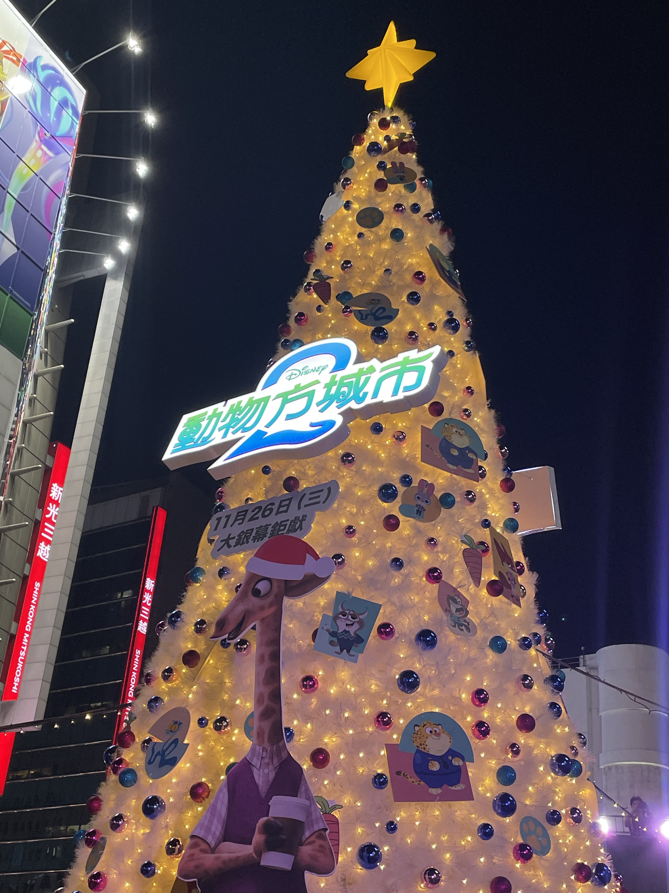
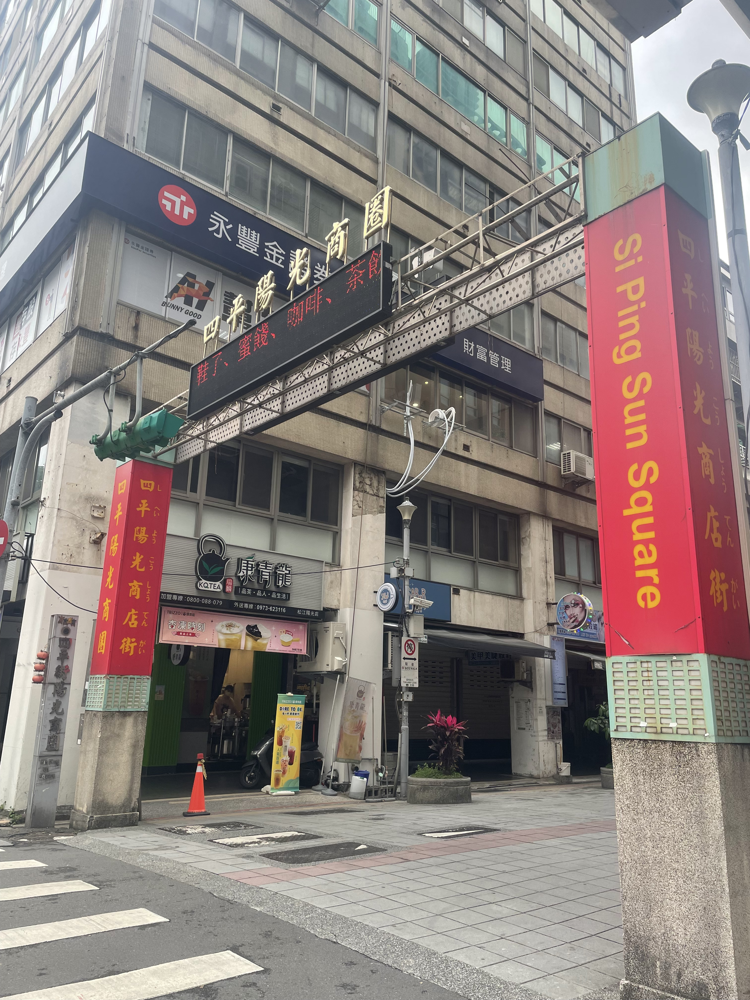
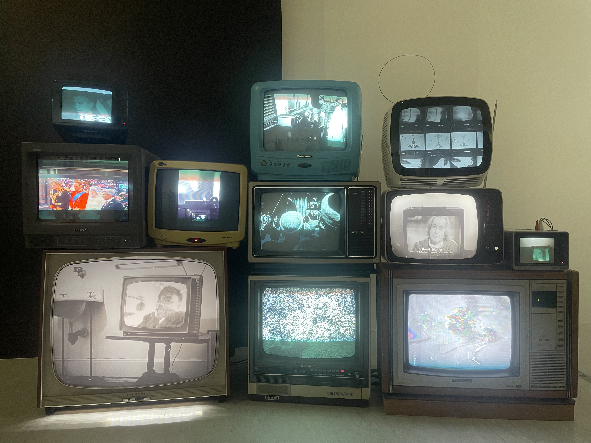
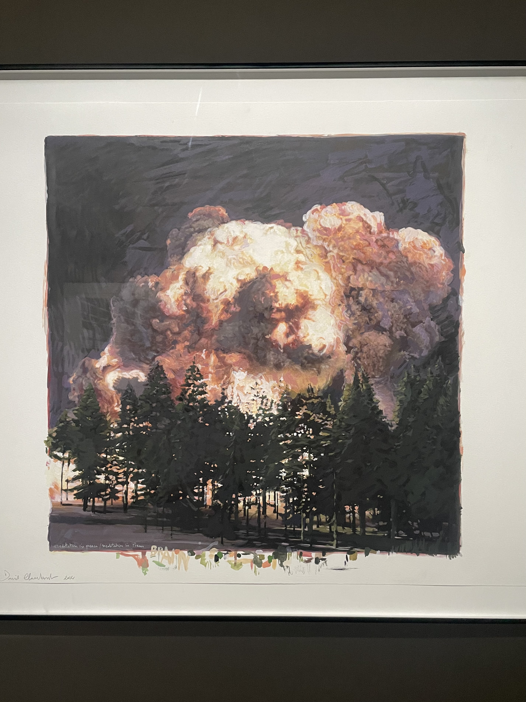

台北市中山區
基本資訊
位於台北市北部，地理位置居中，南接大同區與松山區，西臨士林區與萬華區，是台北市重要的商業、交通與文化樞紐之一。中山區早期因地理交通便利，加上日治時期的都市規劃，使其逐步形成集合住宅、商業街區與辦公大樓的混合型城市結構。 區內街廓完整，擁有百貨商場、購物中心、餐飲與旅館群聚的商業核心，同時保留多處文化與歷史場域，如老牌戲院、日治時期建築及藝文空間，呈現新舊交織的都市面貌。中山區亦是北市重要交通節點，多條捷運線與公路交會，使商業與生活機能高度整合。
推薦景點
| 中山南西商圈
聚集在南京西路周邊，是台北市知名的商業與購物熱區。這裡匯集大型百貨公司、時尚品牌專賣店、餐飲咖啡館與特色小店，形成兼具國際品牌與在地特色的多元商業環境。 商圈交通便利，捷運中山站與多條公車路線交會，使這裡成為購物、休閒與社交的核心地帶。白天可以感受繁忙的商業氛圍，夜晚則因餐飲與咖啡文化而呈現不同的生活節奏。南西商圈也經常舉辦各類市集、節慶活動與促銷活動，吸引遊客與市民流連。
| 文昌宮
是一座主要供奉文昌帝君的道教廟宇，歷史悠久，兼具宗教信仰與地方文化功能。廟宇建築保留傳統閩南式風格，屋脊、剪粘與木雕細節精緻，呈現典雅與莊嚴並存的風貌。 文昌宮長期承擔地方教育與文化象徵的角色，許多學生與家長前來參拜，祈求學業進步與智慧增長，也使廟宇成為教育信仰與社區生活交會的場所。平日廟內氣氛寧靜，節慶時則聚集參拜人潮與傳統祭典活動，展現地方信仰的活力與延續。






